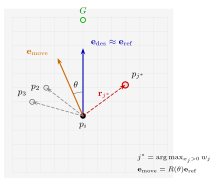

CollisionFreeSpeedModelV3 (Rotational Steering)#
Overview#
CollisionFreeSpeedModelV3 is a variant of the Collision-Free Speed
Model V2 (CFSV2; Tordeux et al., 2016)
in which the steering and the speed selection are explicitly
decoupled. The walking direction is
obtained by rotating a reference direction toward the side opposite the
most relevant forward neighbor, and the walking speed is computed from
a scalar spacing using the optimal-velocity relation. A first-order
relaxation is applied to the heading angle to suppress jitter, and a
small reverse-speed floor is used to release contact deadlocks.
The two modelling questions guiding the formulation are: how many neighboring pedestrians influence the motion of an agent, and how strongly an agent deviates from its desired walking direction when avoiding others.
Reference direction and visible neighbors#
Before the steering rule is applied, two preprocessing steps shape the input to the direction model.
First, a reference direction \(\mathbf{e}_{\mathrm{ref}}\) is constructed by combining the desired direction \(\mathbf{e}_{\mathrm{des}}\) with a repulsive contribution from nearby walls,
where the sum runs over wall segments in the agent’s vicinity, \(d_{iw}\) is the distance to the closest point on segment \(w\), and \(\mathbf{e}_{iw}\) is the unit vector from the agent toward that point. The wall repulsion only bends the reference direction; it is not summed into the final velocity as in V2. If the resulting vector is degenerate, the agent retains its current orientation.
Second, only visible neighbors are considered: a neighbor whose connecting segment crosses a wall is excluded from both the steering and the spacing computations. This prevents agents from reacting to others that are occluded by the geometry, for instance around corners.
Direction update#
{kind=link}

Rotational direction model. The most relevant forward neighbor \(j^*\) is selected via the anisotropic weighting \(w_j\). The walking direction \(\mathbf{e}_{\mathrm{move}}\) is obtained by rotating the reference direction \(\mathbf{e}_{\mathrm{ref}}\) by the angle \(\theta\).#
For each forward neighbor (relative position \(\mathbf{r}_j = \mathbf{p}_j - \mathbf{p}_i\) with \(x_j = \mathbf{e}_{\mathrm{ref}}\cdot\mathbf{r}_j > 0\)) the signed lateral position is
Neighbor relevance is determined through an anisotropic weighting that decays exponentially in both the longitudinal and lateral directions,
with independent decay lengths \(r_x = R\,\sigma_x\) and
\(r_y = R\,\sigma_y\), where \(R\) is the base perception range
(range_neighbor_repulsion) and \(\sigma_x\), \(\sigma_y\) are the
dimensionless aspect factors range_x_scale, range_y_scale. Setting
\(\sigma_x > \sigma_y\) elongates the perception field along the direction
of motion.
Only the most relevant forward neighbor is used,
and the turning angle is
where the negative sign drives the agent away from the occupied side
and \(\varepsilon_s\) regularizes the side-sign term near the centerline.
The bound \(\theta_{\max}\) caps the per-step deviation from the reference
direction; it is set from strength_neighbor_repulsion clamped against
theta_max_upper_bound.
The walking direction is then obtained by rotating the reference direction,
Because the update is purely rotational, the direction vector remains unit length by construction.
Heading relaxation#
Applied directly, the turning angle reacts instantaneously to the configuration of forward neighbors and can produce jittery direction changes when the selected neighbor \(j^*\) switches between time steps. To suppress such artifacts, the heading angle is relaxed toward the target angle through a first-order dynamics,
with \(\tau_\theta\) a relaxation time constant. Discretized with explicit Euler over a simulation step \(\Delta t\),
Each agent therefore carries the heading angle as part of its state from one time step to the next; the direction model is not memoryless. Smaller values of \(\tau_\theta\) recover the instantaneous response of the rotational direction model, whereas larger values produce smoother trajectories at the cost of a delayed reaction.
Spacing and speed#
{kind=link}

Spacing evaluation along the movement direction. A neighbor \(j\) is considered for the spacing calculation when its lateral offset \(y_j\) from the centerline along \(\mathbf{e}_{\mathrm{move}}\) falls within the corridor of half-width \(l = r_i + r_j\).#
The walking speed depends only on the available spacing. As in the direction model, the spacing computation considers only visible neighbors. Two spacing values are evaluated, \(s_{\mathrm{move}}\) along the movement direction \(\mathbf{e}_{\mathrm{move}}\) and \(s_{\mathrm{goal}}\) along the desired direction \(\mathbf{e}_{\mathrm{des}}\); they are combined using a small blending weight \(w_b\),
Each component is the minimum, over all visible neighbors, of the geometric spacing \(\|\mathbf{r}_j\| - l\) with \(l = r_i + r_j\), evaluated within the corridor \(|\mathrm{left}(\mathbf{e})\cdot\mathbf{r}_j| \le l\).
The walking speed follows the optimal-velocity relation
where \(T\) is the time gap (time_gap), \(b_f\) the buffer distance
(agent_buffer), and \(v_0\) the free walking speed (desired_speed).
The lower bound \(v_{\min}\) is set to a small negative value
(\(v_{\min} = -0.01\) m/s) rather than zero. This deterministic,
sub-millimetric reverse motion releases configurations in which two
agents are mutually blocked at spacing \(s \le b_f\) that would otherwise
form persistent deadlocks.
Per-agent parameters#
These are exposed via
CollisionFreeSpeedModelV3AgentParameters and
can be set or modified per agent at any time.
Symbol |
Parameter (Python) |
Default |
Unit |
Role |
|---|---|---|---|---|
\(v_0\) |
|
|
m/s |
Free walking speed |
\(T\) |
|
|
s |
Time gap in the OV relation |
\(b_f\) |
|
|
m |
Buffer distance, shifts speed-zero point |
\(r_i\) |
|
|
m |
Agent radius |
\(\theta_{\max}^{\mathrm{ub}}\) |
|
|
rad |
Hard upper bound on \(\theta_{\max}\) |
|
|
rad |
Maximum turning angle (clamped against the bound above to give \(\theta_{\max}\)) |
|
\(R\) |
|
|
m |
Base perception range |
\(\sigma_x\) |
|
|
- |
Longitudinal aspect factor, \(r_x = R\,\sigma_x\) |
\(\sigma_y\) |
|
|
- |
Lateral aspect factor, \(r_y = R\,\sigma_y\) |
\(A_w\) |
|
|
- |
Wall repulsion strength |
\(B_w\) |
|
|
m |
Wall repulsion decay length |
Internal constants#
These are fixed in the implementation and are not exposed as parameters.
Symbol |
Code constant |
Value |
Unit |
Role |
|---|---|---|---|---|
\(w_b\) |
|
|
- |
Weight of goal-direction spacing in the blend |
\(\tau_\theta\) |
|
|
s |
Heading relaxation timescale |
\(\varepsilon_s\) |
|
|
m |
Side-sign smoothing constant |
\(v_{\min}\) |
|
|
m/s |
Reverse-speed floor for deadlock release |
Practical interpretation#
If you observe… |
Primary knob |
Typical direction |
|---|---|---|
Too much queueing / too little overtaking |
|
increase (small steps) |
Too much zig-zag / snake behavior |
|
decrease |
Agents react too late to leaders |
|
increase |
Agents react to too many lateral neighbors |
|
decrease |
Early lane-like splitting |
|
often increase with moderate strength |
Differences from V2#
Aspect |
V2 |
V3 |
|---|---|---|
Neighbor avoidance |
Sum of repulsion vectors over all neighbors |
Rotational steering toward a single dominant forward neighbor |
Boundary contribution |
Summed into the final velocity |
Bends the reference direction only |
Heading state |
None (instantaneous) |
Persistent, relaxed toward the target with timescale \(\tau_\theta\) |
Spacing direction |
Single direction from the steering field |
Blend of move-direction and goal-direction spacings |
Speed lower bound |
\(v \ge 0\) |
\(v_{\min} = -0.01\) m/s for deadlock release |
Anisotropy |
Equal weighting of distances |
Asymmetric perception field via \(\sigma_x \ne \sigma_y\) |
Neighbor visibility |
All neighbors within range |
Line-of-sight filter excludes occluded neighbors |